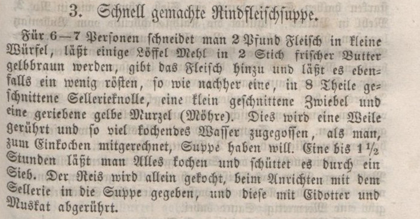
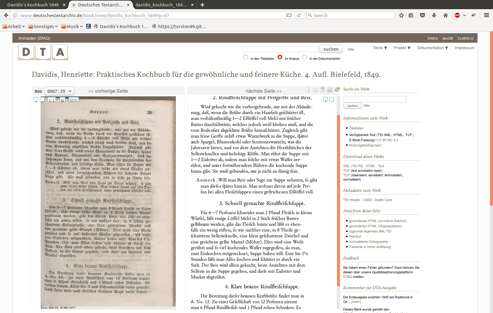
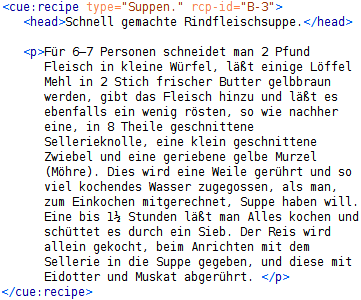
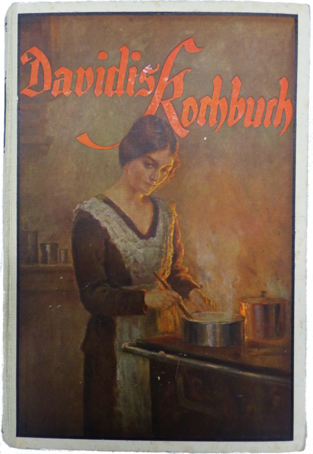
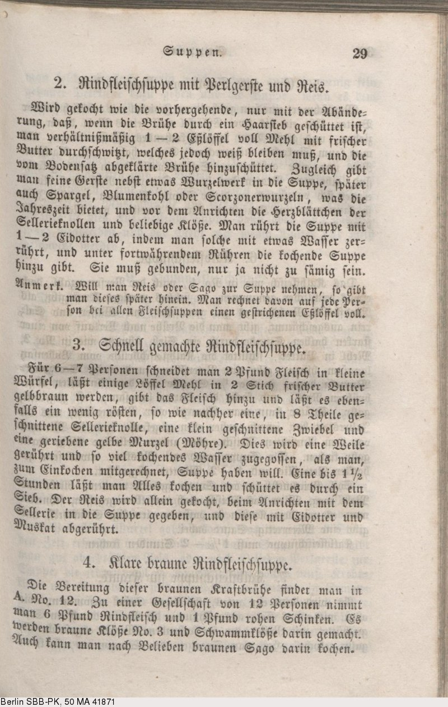

Ziel dieser Arbeit ist die Erstellung einer digitalen Edition des Buches Praktisches Kochbuch für die gewöhnliche und feinere Küche , welche für kulinarische Analysen genutzt werden kann. Eine Transkription des Kochbuches wurde bereits vom Deutschen Textarchiv angefertigt. Ein beispielhafter Auszug ist in Abb. 1 zu sehen. Abb. 1a zeigt den Scan eines Rezeptes, Abb. 1b die textuelle Form und Abb. 1c eine bereits von uns überarbeitete Version der TEI-basierten Transkription.
Abb. 1: Transkription von Davidis's Kochbuch
Abb. 1a

Abb. 1b

Abb. 1c

Für kulinarische Analysen sind insbesondere Zutatenlisten wünschenswert, welche bei den Rezepten nicht vorhanden sind. Für eine maschinenlesbare Aufarbeitung wird ein Domänen-spezifisches Vokabular benötigt. Idealerweise können aus den mit dem Vokabular ausgezeichneten Rezepten anschließend die Zutatenlisten automatisch extrahiert werden. Da die manuelle Auszeichnung zeitaufwendig und fehleranfällig ist, forschen wir des Weiteren im Bereich Information Extraction an Möglichkeiten zum automatischen Auszeichnen. Beides sind keine trivialen Probleme.
Domänen-spezifisches Vokabular
Bestehende Vokabulare ermöglichen keine kulinarische Analyse. TEI hat kein spezifisches Vokabular um Rezepte auszuzeichnen. Schema.org/Recipe ist ein Vokabular, welches das Ziel hat, Treffer von Suchmaschinen anzureichern. Es wird davon ausgegangen, dass jedes Rezept eine Zutatenliste hat. In dieser wird jede Zeile beispielsweise mit Microdata angereichert; z. B. <span itemprop="recipeIngredient">2 EL Zucker</span>. Für den Computer stellt dieser Tag-Inhalt jedoch nur einen String dar. Für eine kulinarische Analyse müsste die Mengenangabe (2), die Einheit (EL), sowie die Zutat (Zucker) explizit ausgezeichnet sein. Das Auszeichnen von Zutaten im Fließtext, was wir mangels bestehender Zutatenliste machen müssen, muss darüber hinaus einige Sonderfälle beachten. Dies verdeutlichen folgende zwei Beispielsätzen aus dem Kochbuch:
„Der [Englische] Soja macht die Suppe gewürzreicher, kann jedoch gut wegbleiben, und statt Madeira kann man weißen Franzwein und etwas Rum nehmen.“
„Das Kalbfleisch wie in No. 1, nach der Personenzahl, doch etwas reichlicher genommen, da solches weniger Kraft gibt, als Rindfleisch.“
In Erstens ist Soja eine optionale Zutat. Je nachdem ob sie verwendet wird, hat das Gericht eine unterschiedliche Geschmacksrichtung. In das Rezept gehören auch nicht Madeira, weißer Franzwein und Rum, sondern Madeira oder weißer Franzwein und Rum. Somit ist es nötig, bei der Auszeichnung zwischen optionalen und alternativen Zutaten zu unterscheiden. Des Weiteren sind alle drei Zutaten vage Begriffe. Rum gibt es zum Beispiel in vielen verschiedenen Preisklassen und mit unterschiedlichen Geschmacksausprägungen. Sofern vorhanden ist daher eine Präzisierung wünschenswert. Idealerweise wären Zutaten bereits weltweit frei verfügbare und eindeutige Ressourcen mit abrufbaren Nährwertangaben. Ein Mapping zwischen den verwendeten Zutaten pro Rezept und so einem Ressourcen-Bestand würde eine kulinarische Auswertung leicht und transparent machen. Leider gibt es unseren Wissens nach solche Ressourcen noch nicht.
In Zweitens ist Rindfleisch keine Zutat, sondern dient nur als Vergleich für eine ungefähre Mengenangabe. Wenn dieser Satz nur schnell gelesen wird, wird Rindfleisch hingegen leicht als Zutat eingeordnet (mir selber ist es erst beim dritten Mal lesen aufgefallen, dass es gar keine Zutat ist). Dies zeigt zum einen, dass beim Auszeichnen leicht Fehler gemacht werden können und zum anderen, dass nicht alle Zutaten als Zutaten des Rezepts auszuzeichnen sind.
Information Extraction in der Koch-Domäne
Information Extraction beschäftigt sich damit, nützliche Informationen aus unstrukturiertem Text zu extrahieren. Es wurde erstmals in als eigene Disziplin erwähnt. Ein allgemeiner Überblick kann in gefunden werden. Die Algorithmen versuchen meist bestehende Semi-Strukturen auszunutzen. In der Koch-Domäne haben wir drei unterschiedliche automatisierte Ansätze gefunden, auf die wir genauer eingehen werden:
Regular Expression-based
Conditional Random Field-based
Dictionary- and rule-based
Nachdem die Zutaten von einem Programm extrahiert wurden, müssen die extrahierten Entities zum Auszeichnen nur noch entsprechend dem Domänen-spezifischen Vokabular zurückgeschrieben werden.
Beitrag zur Forschung
Der Beitrag dieser Arbeit zu dem aktuellen Forschungsstand lässt sich wie folgt zusammenfassen:
Die Feststellung, dass bestehende Auszeichnungssprachen nicht für eine kulinarische Analyse geeignet sind
Entwicklung einer Auszeichnunggssprache für kulinarische Analysen
Die Erkenntnis, dass Information Extraction mittels Conditional Random Fields für unsere Problemstellung nicht zielführend ist
Erstellung eines dictionary- and rule-based Prototypen
Dokumentation sowie Durchführung aller nötigen Arbeitsschritte, wie ein gedrucktes Buch digital zu einer Webseite aufgearbeitet werden kann
Struktur der Arbeit / Webseite
Unten stehend ist eine interaktive Grafik. Diese zeigt unsere Arbeitsschritte in logisch chronologischer Reihenfolge. Als erstes muss das gedruckte Buch transkribiert werden. Anschließend entwickeln wir eine Auszeichnungssprache, die eine kulinarische Analyse ermöglicht. Danach beschäftigen wir uns mit Programmen, welche die Rezepte automatisch auszeichnen. Abschließend werden die ausgezeichneten Rezepte in eine Webseite umgewandelt. Aufbauend auf dieser kann eine kulinarische Analyse durchgeführt werden, was nicht mehr Teil dieser Informatik-Arbeit ist. Wenn in dem jeweiligen Arbeitsschritt eine Transformation stattgefunden hat, ist rechts die Grundlage zu sehen und links, die neue, transformierte Version. Unter dieser Grafik ist auch die Struktur der Arbeit als klassisches Inhaltsverzeichnis zu finden.
Transkription
Gedrucktes Buch Eingescanntes Buch Transkription des DTA Unsere Transkription
Auszeichnungssprachen
Stand der Forschung cueML
Information Extraction
Stand der Forschung Unsere Prototypen
Digitale Rezepte
* Da das originale Buchcover nicht erhalten ist, ist hier das Buchcover der von Marie Walters überarbeiteten Ausgabe (1933) zu sehen.

Neue Version
Seiten des Buches eingescannt

Vorherige Version
* Da das originale Buchcover nicht erhalten ist, ist hier das Buchcover von Marie Walters überarbeiteten Ausgabe (1933) zu sehen.
Bestehende Ansätze um in der Koch-Domäne automatisiert Entities/Vokabeln sowie ihre Beziehungen untereinander zu extrahieren. Nach dem diese extrahiert sind, können sie automatisiert, mit cueML ausgezeichnet, zurückgeschrieben werden.
Links ist die Struktur der Webseite als klassisches Inhaltsverzeichnis. Aufbauend auf der Version des Deutschen Textarchivs behandelt das erste Kapitel unsere Transkription des gedruckten Buchs von Frau Davidis. Im zweiten Kapitel stellen wir bestehende Auszeichnungssprachen in der Koch-Domäne vor. Da diese nicht für eine kulinarische Analyse geeinigt sind, definieren wir für diesen Zweck im dritten Kapitel die Auszeichnungssprache cueML. Das vierte Kapitel beschäftigt sich mit der Information Extraction in der Koch-Domäne, mit dem Ziel später Rezepte automatisch mit cueML auszeichnen zu können. Darauf aufbauend werden im fünften Kapitel zwei Prototypen zur Extraktion von Entities in der Koch-Domäne entwickelt. Die Evaluation dieser Prototypen ist Gegenstand des sechsten Kapitels. Das siebte Kapitel enthält einige Kommentare unsererseits zu dieser Arbeit.